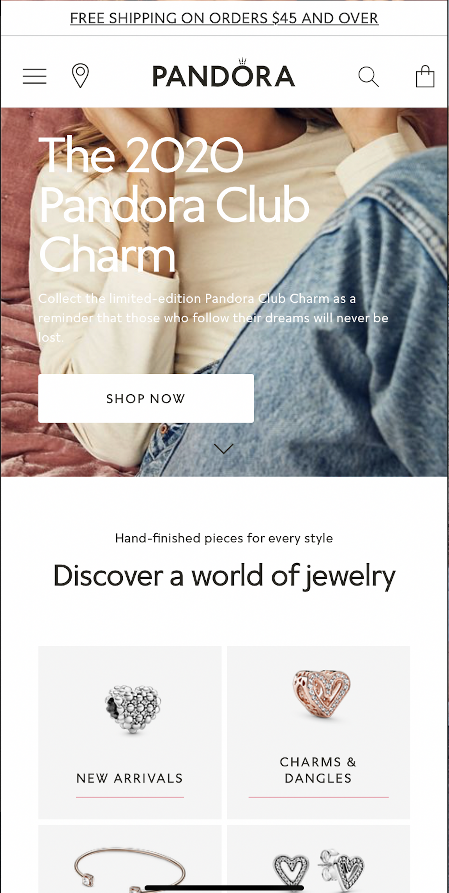
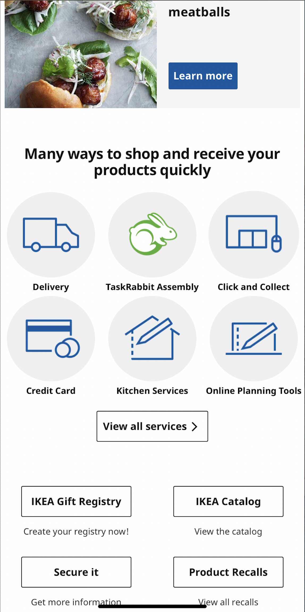
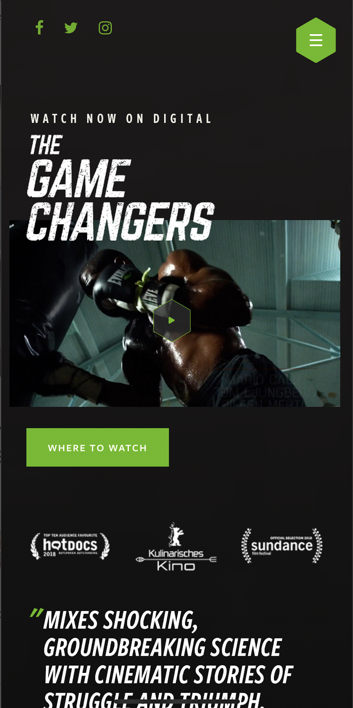

ALIGNMENT
Pandora
/https://us.pandora.net/

Every single element of Pandora's site is perfectly aligned with one another and the homepage is a great example of it. This gives a very clean and organized look to the overall design of the page. Good alignment also creates a very inviting view that's easy to follow adding to the great navigation experience that also encourages the audience to stay.
REPETITION
IKEA
https://www.ikea.com/us/en/

The priciple of repetition can be observed a lot thoughout IKEA's site. There are multiple uses of shapes containing different content on them, like furniture and icons. This use of repetition helps the user associate the different elements into groups which makes it easy to identify what the user might be looking for.
CONTRAST
The Game Changers
https://gamechangersmovie.com/

The Game Changers movie's site is a good example of use of contrast in througout the design of its pages. The use of bright green on black sends a mmessage of impact that stands out. This technique matches the personality of "The Game Changers" which is based on power, strenght and positivity. The use of contrast for this site also creates a modern look that works with the target audience.